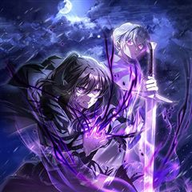
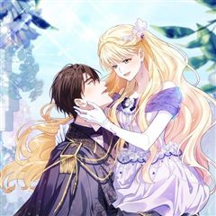

카카오웹툰 추천 인기 순위 TOP 30
카카오웹툰에서 지금 연재 중인 작품을 카카오웹툰 공식 인기 순위 순서로 모았어요. 네이버웹툰·카카오웹툰·레진코믹스에서 조건에 맞는 작품 944개 중 인기 순으로 30개를 골랐어요. 인기 TOP 3: 군림천하, 너에게 빼앗을 왕관, 권왕전생
2026-10-13 기준 · 성인 작품 제외
내 취향으로 더 좁혀서 추천받기 →-
1
 카카오웹툰
카카오웹툰군림천하
"너만은 꼭 군림천하 해야 한다!” 그 한마디로 진산월의 운명이 결정됐다. 스물세 살, 그는 종남파의 장문인이 되었다. 남은 이들은 단 8명의 제자뿐. 한때 천하제일을 꿈꿨지만, 지금은 명맥만을 잇는 문파. 사부의 유지를 위해, 살아남기 위해— 진산월은 비정한 강호로 나아간다.
자극적인성장물액션카카오웹툰에서 보기 → -
2
 카카오웹툰
카카오웹툰너에게 빼앗을 왕관
내 평생을 바쳐 사랑한 사람. 그러나 사랑이라 믿었던 것은 배신이었고, 왕이었던 오라비는 나의 무지로 인해 죽었으며, 조국은 소리 없이 처참히 무너졌다. “다시… 돌아왔어.” 하지만 이번 생은 다를 것이다. 숙부에게 주어졌던 영광은 전부 빛을 잃을 것이며, 남편이 바랐던 찬란한 왕관은…
로판복수극카카오웹툰에서 보기 → -
3
 카카오웹툰
카카오웹툰권왕전생
인간들이 이종족을 노예로 부리는 세상. 대마도사 '레펜하르트'는 이종족들을 돕는다는 이유로 인간들에게 마왕 취급을 받는다. 마왕을 토벌하기 위해 온 용사 일행! '레펜하르트'는 그에 맞서 용사 일행에게 큰 피해를 주는 것에 성공하지만, 결국 권왕 '테스론'에게 죽임당할 위기에 처하는데…
학원물성장물카카오웹툰에서 보기 → -
4
 카카오웹툰
카카오웹툰템빨
[신영우 (유저 네임: 그리드)] 세계 최고의 가상 현실 게임 <SATISFY>. 현실에서나, 게임 속에서나, 불운은 항상 그의 곁을 맴도는데.... 퀘스트 수행 중 우연히 발견한 게임 속 로또, '파그마의 기서'. 20억 명이 넘는 유저 중 유일한 최강의 레전드리 직업으로 전직. "…
사이다학원물게임판타지카카오웹툰에서 보기 → -
5
 카카오웹툰
카카오웹툰철혈검가 사냥개의 회귀
바스커빌 가문의 사냥개 '비키르'. 사냥개로서 가문에 충성한 보답은 모함과 누명으로 얼룩진 단두대의 칼날이었다. "다시는 토끼를 잡고 나면 삶아지는 사냥개처럼 살지 않겠노라." 그런 그에게 죽음 대신 찾아온 뜻밖의 기회. 어둠 속에서 송곳니를 갈고닦는 비키르의 눈이 붉게 빛났다. "기…
학원물복수극카카오웹툰에서 보기 → -
6
 카카오웹툰
카카오웹툰SSS급 죽어야 사는 헌터
F급 말단 헌터 ‘김공자‘. 랭킹 1위 ‘염제‘를 부러워하던 어느 날, 무려 S+급 스킬을 얻는다. 하지만 기쁨도 잠시, 어째 스킬 내용이 이상하다?! 상대의 스킬 중 1개를 복사한다,까지는 좋은데… "뭐? 내가 죽어야만 발동된다고?!" 죽어야 사는 헌터의 인간찬가 <SSS급 죽어야…
눈물샘자극학원물회귀카카오웹툰에서 보기 → -
7
 카카오웹툰
카카오웹툰이번 생은 가주가 되겠습니다
“…한번 해 보자. 내가 가주가 되는 거야.” 제국에서 제일가는 가문, 롬바르디의 사생아로 환생한 피렌티아. 게다가 이 가문은 막대한 부는 물론 외교와 문화까지 통달한 말그대로 제국의 역사 자체! 금수저 오브 금수저 인생 당첨! 앞으로는 탄탄대로일 거라 생각했는데…. 아버지는 돌아가시…
사이다로판회귀카카오웹툰에서 보기 → -
8
 카카오웹툰
카카오웹툰흑막 남주의 시한부 유모입니다
내가 쓴 소설로 많은 사람들의 인생이 어그러졌다. 이대로 가면 클로드는 크롬벨 제국을 무너뜨릴 최종 흑막으로 자랄 것이다. 하나뿐인 친구이자, 소설 속에서 비극적인 삶을 살게 된 디엘린에게 한 목숨 같은 약속. “클로드 곁은 내가 지킬게.” 클로드를 바르게 키우기 위해 에단을 좋은 아…
로판육아물카카오웹툰에서 보기 → -
9
 카카오웹툰
카카오웹툰대사형 선유
삼류 낭인 곽노의 손에 거둬진 아이들. 사제관계를 맺고 아이들은 어설프게나마 무공과 보법 수련을 하며 각자의 꿈을 꾼다. 먹고살기 위해 곽노는 늘 자리를 비워야 했고, 아이들 중 맏이인 선유는 사제들을 돌봐야 한다. 그는 대사형大師兄이다.
눈물샘자극액션가족카카오웹툰에서 보기 → -
10
 카카오웹툰
카카오웹툰검술명가 막내아들
진 룬칸델 대륙 최고의 검술명가, 룬칸델의 막내아들 룬칸델 역사상 최악의 둔재 비참하게 쫓겨나 허무한 최후를 맞이한 그에게 다시 한 번 기회가 주어졌다. “너는 이 힘을 어떻게 사용하고 싶더냐?” “저를 위해 사용하고 싶습니다.” 전생의 기억과 압도적인 재능, 그리고 신과의 계약 최강…
액션회귀카카오웹툰에서 보기 → -
11
 카카오웹툰
카카오웹툰아기는 악당을 키운다
세 번의 회귀. 4회차 인생. 운명의 아이로 선택되어 자랐으나 진짜 운명의 아이가 차원이동하여 나타나 그 아이를 위해 희생되는 삶이 반복된다. ‘이 나라는 노답이야. 망명하자.’ 망명 자금을 벌기 위해 입양되기를 택한 르블레인. 거기까진 좋았는데 입양된 곳이 하필이면 악당 가문이었다.…
로판육아물카카오웹툰에서 보기 → -
12
 카카오웹툰
카카오웹툰갓 오브 블랙필드
"Who am I?" 프랑스 외인부대의 전설 '강찬'! 아프리카 전장에서 그를 상대한 자들은 공포와 경외를 담아 '갓 오브 블랙필드' 검은 땅의 신이라 불렀다. 하지만 수니파 추종 세력 SISS의 수뇌인 마살란 사살 작전에 투입된 강찬은 배후에서 날아든 의문의 총알에 전사하게 되고,…
서스펜스액션전쟁카카오웹툰에서 보기 → -
13
 카카오웹툰
카카오웹툰화타가 된 외과의사
정의로운 성격 때문에 전문의는커녕 목숨까지 잃은 일반외과 전공 3년차 한진수. 천사인가, 악마인가, 아님 알 수 없는 시스템인가. 평소 쌓은 선행 덕분에 부활의 기회를 얻게 된다. 산적 떼에게 죽은 몸으로 부활하게 된 한진수. 그런데 이 몸이 전설의 명의名醫 화타?! 전란이 끊임없는…
눈물샘자극액션환생카카오웹툰에서 보기 → -
14
 카카오웹툰
카카오웹툰창귀무쌍
평생 전장 만을 활보하며 살아온 늙은 노병 '추이'는 자신이 죽여 온 자들의 원념에 사로잡혀 죽음에 이른다. 추이가 다시 눈을 떴을 때, 이유는 알 수 없지만 아직 무공도 배우지 못하고 쟁자수로 일하던 어린 시절로 회귀해 있었다. 다시 돌아온 추이는 전생의 인연인 호예양을 떠올리며 호…
자극적인액션복수극카카오웹툰에서 보기 → -
15
 카카오웹툰
카카오웹툰그 쓰레기가 나였어요
역하렘 연애 육성 게임에 빙의했다. 온갖 악행을 저지르다 처단당하는 악녀, F-등급의 튤리아 프레지어로. “이렇게 끔찍한 스탯으로 살아남는 게 가능해?” “이 건방진 말투는 뭐야?!” 돈도 없고 운도 없고 모두에게 미움받으며, 아무도 날 사랑하지 않는다지만… 목숨을 부지하기 위해서 모…
사이다설렘폭발로판빙의카카오웹툰에서 보기 → -
16
 카카오웹툰
카카오웹툰연하지옥
사랑도, 결혼도 '계산'이 되는 손해 보기 싫은 시대. 현대사회 매연 속을 살아가는 두 남녀에게 신선한 사랑이 찾아온다. 엘리트 코스를 밟아왔지만 결혼만큼은 계획대로 되지 않아 초조한 35세 커리어우먼 현다영. 누나 부부의 실패한 결혼생활이 나이 차이라고 생각하는, 의욕 없는 독신남…
설렘폭발로맨틱코미디카카오웹툰에서 보기 → -
17
 카카오웹툰
카카오웹툰오무라이스 잼잼
'음식'과 '가족'의 이야기를 담은 에세이 만화. 몇 개라도 먹을 수 있을 것 같은 '메추리알 조림', 빙글빙글 돌아가는 '회전초밥', 지구 반 바퀴 돌아 포르투갈에서 맛본 '에그타르트', 매콤상콤하게 볶아 입맛 도는 '마라샹궈', 짭짤한 밥도둑 '간장게장' 등 우리가 사랑하는 모든…
공감음식&요리카카오웹툰에서 보기 → -
18
 카카오웹툰
카카오웹툰천하제일인의 소꿉친구
정파를 배신하고 천마 휘하의 마인이 되어 버린 구양천. 마인으로서 살아가며 천마의 명으로 본인의 의지와는 상관없이 수많은 악행을 저지르고 후회로 점철된 인생을 살아가게 된다. 천마가 일으킨 정마대전. 정파의 삼존 존재마저 무릎을 꿇린 천마를 베어낸 위설아로 인해 길고 길었던 지옥 같은…
액션하렘카카오웹툰에서 보기 → -
19
 카카오웹툰
카카오웹툰야구의 정치
구단에서 쫓겨난 야구 코치 맹정진. 선배의 도움으로 겨우 입단한 선데빌스 팀은 파벌 싸움으로 나락에 떨어진 상황. 이곳에서 버틸 방법은 정치밖에 없다. 실력만으론 부족한 야구판에서 살아남기 위해, 맹정진의 ‘정치’가 시작된다.
성장물액션카카오웹툰에서 보기 → -
20
 카카오웹툰
카카오웹툰퀴퀴한 일기
내 주변에 반드시 한 명은 있을 것만 같은, 어쩌면 나 같기도 한 그녀의 일기. 어느덧 40대의 아기 엄마가 된 주인공 이보람과 그의 군단들의 이야기이다. 너무나 시시하고 쩨쩨해서 누구에게 털어놓기도 멋쩍은 일들이 작은 마음을 가진 그들에겐 늘 뜨겁고 강렬하다! 마음속 깊이 숨어있는…
공감개그카카오웹툰에서 보기 → -
21
 카카오웹툰
카카오웹툰왕자님은 양파 따위에 울지 않는다
염병할 전쟁이 끝났다. 그로부터 3년. 이 시골 마을도 제법 안정된 것 같…… 은데. 웬 곰 같은 부랑자가 우리 식당에 쳐들어와 헛소리를 한다. “전쟁 중, 귀하의 아버님에게 진 빚을 갚으러 왔습니다.” 그런데 이 자식은 자기가 뭘 빚졌는지도 모른댄다. 아버지는 전쟁 중 돌아가셔서 뭘…
힐링로판로맨틱코미디카카오웹툰에서 보기 → -
22
 카카오웹툰
카카오웹툰저승식당
“8, 8, 8, 82억이요?!” 흙수저 인생에 갑자기 찾아온 82억의 건물!! 그리고… 식당? 식당에 찾아오는 손님들의 행색은 수상하기 짝이 없고 알 수 없는 말만 하는데……. 서울 한복판에서 벌어지는 등골 서늘한 감동 스토리. 매일 밤 열한 시부터 한 시까지. 저승식당, 지금 영업…
힐링음식&요리옴니버스카카오웹툰에서 보기 → -
23
 카카오웹툰
카카오웹툰무한의 마법사
마굿간에 버려져 평민으로 키워진 아이, 시로네. 타고난 통찰력으로 글까지 깨우친 아이는 도시로 나간 어느 날 그토록 궁금해하던 마법을 경험한다. 그 길로 마법사를 꿈꾸게 된 시로네. 하지만 신분의 장벽이 두터운 이 곳은 아이에게 냉혹하고, 그는 채 어른이 되기도 전에 이 세상의 이면을…
미스터리학원물성장물카카오웹툰에서 보기 → -
24

카카오웹툰헬무트
어둠의 싹을 가지고 태어난 아이, 헬무트. 태어나자마자 누구도 나오지 못하는 마물의 숲 '파헤'에 버려졌지만, 운 좋게 마물 '엘라가'에 의해 거두어진다. "이 숲은 나갈 수 없잖아." "나갈 수 있어. 내가 만난 인간이 그랬거든." "인간...?" 마물의 손에 길러진 아이, 마침내…
학원물시대물카카오웹툰에서 보기 → -
25

카카오웹툰대공비가 된 마탑주
제13대 마탑주 레이시아는 삶에 불만이 없었다. 동생처럼 키운 제자의 배신으로 에크하르트 대공비의 몸에서 눈을 뜨기 전까지는. 그런데 이 대공비, 인생도 막장인데 심지어 마력 부적응자란다. 자신의 마력을 코앞에 두고서도 쓸 수가 없자 레이시아는 체질 개선을 위한 약을 만들기로 마 음먹…
성장물로판빙의카카오웹툰에서 보기 → -
26
 카카오웹툰
카카오웹툰결혼 장사2 ~잊히지 않을 노래~
고귀한 자리에 올랐으나 가족도 권력도 사랑도… 그 무엇도 가지지 못했던 왕, 시릴 드 세브랑. 유일한 구원이자 전부였던 알렉산드라를 지키지 못하고 죽임을 당했을 때, 그는 알 수 없는 힘에 의해 10년 전으로 되돌아가게 된다. 아직 알렉산드라가 아르노의 공녀로 기사의 꿈을 꾸며, 성자…
성장물로판타임슬립카카오웹툰에서 보기 → -
27
 카카오웹툰
카카오웹툰푸른 눈의 책사
적법한 왕의 핏줄을 타고난 두 형제는 가짜 왕을 몰아내고 군위에 오를 것을 결심한다. 갈대밭에 숨어 옆 나라로 건너가 조력자들을 만나려는 그들에게 장사치는 푸른 눈의 책사에 대한 경고를 한다.
시대물카카오웹툰에서 보기 → -
28
 카카오웹툰
카카오웹툰악어
19세의 나이, 살인을 저지르고 10년의 수형 생활을 마친 정인후. 출소 후 삶을 꿈꾸지만 현실을 쉽지않다. 그러던 어느 날, 과거 자신이 죽인 김상철의 아내 윤진희가 찾아와 아들 김루환의 경호를 제안한다.
자극적인액션느와르카카오웹툰에서 보기 → -
29
 카카오웹툰
카카오웹툰괴담에 떨어져도 출근을 해야 하는구나
[ ⚠️ 해당 작품에는 공포 연출 및 폭력적·잔혹한 장면이 포함되어 있습니다. 이용에 참고 부탁드립니다. ] 소중한 연차까지 내고 갈 정도로 좋아하던 '어떤 현대판타지' 팝업 이벤트. 그리고 그날, 그 현판 속으로 빙의당했다. 무려 유명 대기업에 막 취직한 신입사원으로! 복지 좋고 연…
미스터리카카오웹툰에서 보기 → -
30
 카카오웹툰
카카오웹툰레드스톰 - 왕의 귀환
피에 젖은 사막. 붉은 사막을 용납할 수 없던 한 소년. 소년은 사막의 무신이 되어 사막을 구하지만 이제는 세계가 피에 젖으려 한다. 무신은 이제 사막을 넘어 세계를 구하려 한다. “4년 만에 돌아온 그로우, 왕의 귀환. 이제는 사막에서 전쟁을 보여줘야 할 때다.”
액션성장물카카오웹툰에서 보기 →